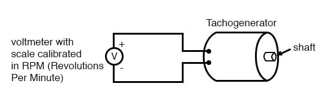

An electromechanical generator is a device capable of producing electrical power from mechanical energy, usually the turning of a shaft. When not connected to a load resistance, generators will generate voltage roughly proportional to shaft speed. With precise construction and design, generators can be built to produce very precise voltages for certain ranges of shaft speeds, thus making them well-suited as measurement devices for shaft speed in mechanical equipment. A generator specially designed and constructed for this use is called a tachometer or tachogenerator. Often, the word “tach” (pronounced “tack”) is used rather than the whole world.

By measuring the voltage produced by a tachogenerator, you can easily determine the rotational speed of whatever it's mechanically attached to. One of the more common voltage signal ranges used with tachogenerators is 0 to 10 volts. Obviously, since a tachogenerator cannot produce a voltage when it’s not turning, the zero cannot be “live” in this signal standard. Tachogenerators can be purchased with different “full-scale” (10 volts) speeds for different applications. Although a voltage divider could theoretically be used with a tachogenerator to extend the measurable speed range in the 0-10 volt scale, it is not advisable to significantly overspeed a precision instrument like this, or its life will be shortened.
Tachogenerators can also indicate the direction of rotation by the polarity of the output voltage. When a permanent-magnet style DC generator’s rotational direction is reversed, the polarity of its output voltage will switch. In measurement and control systems where the directional indication is needed, tachogenerators provide an easy way to determine that.
Tachogenerators are frequently used to measure the speeds of electric motors, engines, and the equipment they power: conveyor belts, machine tools, mixers, fans, etc.